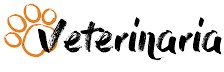
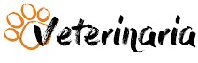
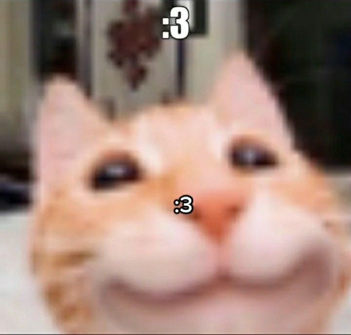
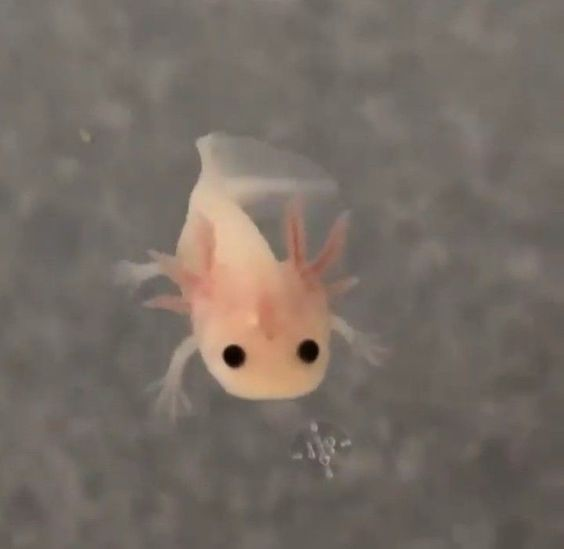
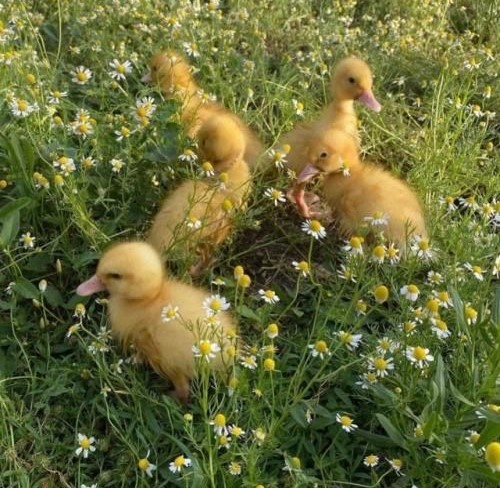
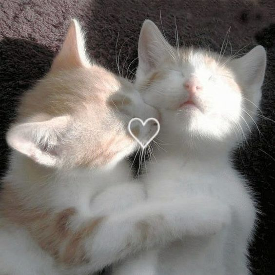
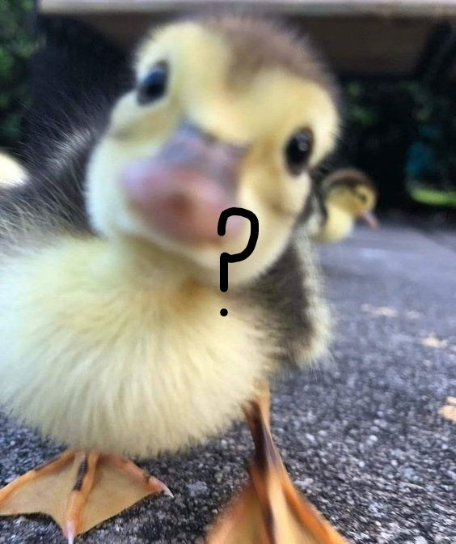

Especialidades

servicios

ubicacion

adopcion

informacion

Hospital VETERINARIO ANIMAL
HOME® URGENCIAS 24 HORAS.
El Hospital Veterinario Animal Home®
es el Hospital Veterinario 24 horas
del sur de ciudad de México de alta especialidad con máxima tecnología y atención médica veterinaria especializada para su mascota.
Nuestros médicos veterinarios DF están listos para atenderle a cualquier hora, todos los días del año.
Usted podrá tener la tranquillity de que su mascot estará cuidada por un equipo de médicos veterinarios DF especialistas que después de the career de veterinaria DF, han realizado una especialidad en medicine y surgery de perros y gatos.
Las especialidades veterinarias no están disponibles todos los días, únicamente las ofrecemos con cita
no nos responsabilizamos por muerte de mascotas